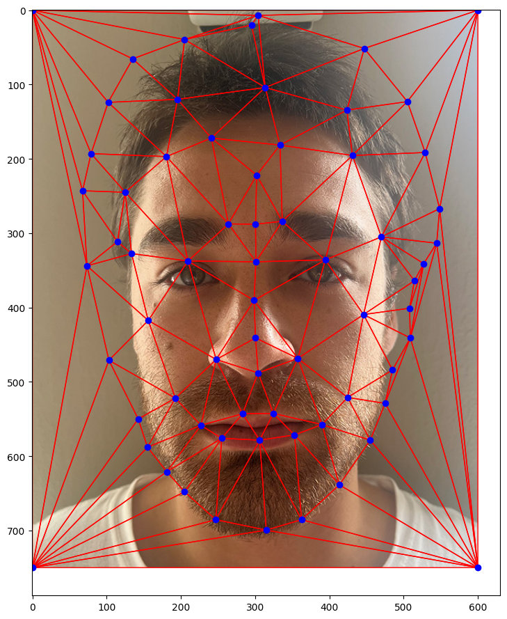
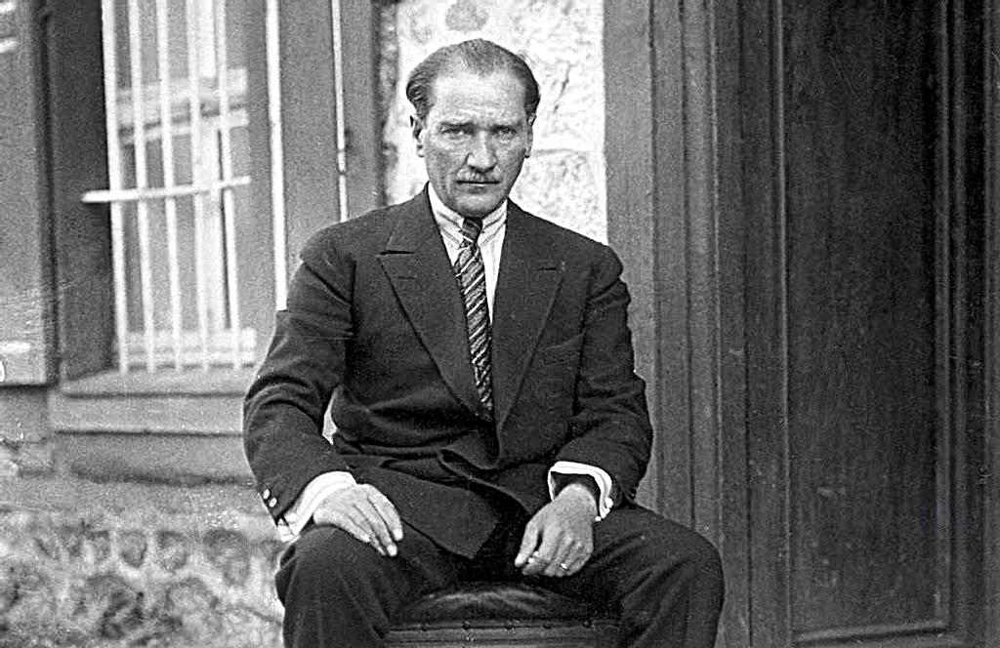
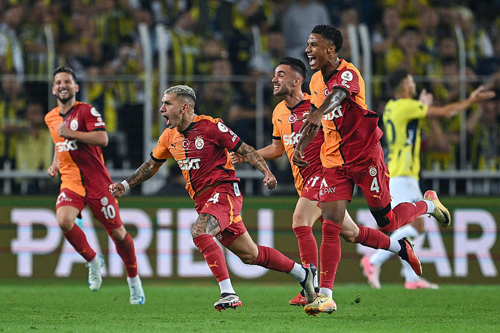
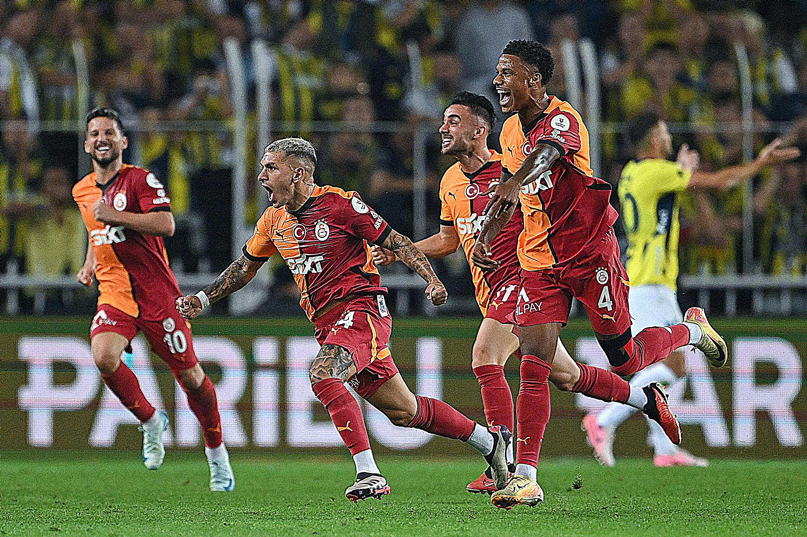

Part 1: Defining Correspondences
To morph two images, we need to select points of correspondences. I used the given tool to select points on the images. After defining the correspondences, I used Delaney Triangulation to triangulate the mean points of Larry David's and Can Ruso's images to find the mean shape.

Ruso points

Mean points on Can Ruso
Part 2: Computing the "Mid-way Face"
Affine Transformation Explanation
In order to compute the mid-way face, we need to find the affine transformation matrix that transforms original points in Larry and Can's images to points in each triangle in the average shape trinagulation.
Let's say we have two triangles(one is from one of the original shapes, and one is from the average shape):
Original triangle has points $p_1, p_2, p_3$, with $(x_i, y_i)$ coordinates for each point
Transformed triangle has points $q_1, q_2, q_3$ with $(x'_i, y'_i)$ coordinates for each point
Then, we can write the following matrix multiplication for the transformation operation, the 1s appended for affine operations:
\[
\begin{bmatrix}
a & b & c \\
d & e & f \\
0 & 0 & 1
\end{bmatrix}
\begin{bmatrix}
x_i \\
y_i \\
1
\end{bmatrix} =
\begin{bmatrix}
x'_i \\
y'_i \\
1
\end{bmatrix}
\]
Based on this, we can write the following equations:
\[
\begin{aligned}
ax_i + by_i + c + 0d + 0e + 0f &= x'_i \\
0a + 0b + 0c + dx_i + ey_i + f &= y'_i
\end{aligned}
\]
If we expand this on all 3 points in the triangles:
\[
\begin{aligned}
ax_1 + by_1 + c + 0d + 0e + 0f &= x'_1 \\
0a + 0b + 0c + dx_1 + ey_1 + f &= y'_1 \\
ax_2 + by_2 + c + 0d + 0e + 0f &= x'_2 \\
0a + 0b + 0c + dx_2 + ey_2 + f &= y'_2 \\
ax_3 + by_3 + c + 0d + 0e + 0f &= x'_3 \\
0a + 0b + 0c + dx_3 + ey_3 + f &= y'_3
\end{aligned}
\]
We can solve this system in matrix form:
\[
\begin{bmatrix}
x_1 & y_1 & 1 & 0 & 0 & 0 \\
0 & 0 & 0 & x_1 & y_1 & 1 \\
x_2 & y_2 & 1 & 0 & 0 & 0 \\
0 & 0 & 0 & x_2 & y_2 & 1 \\
x_3 & y_3 & 1 & 0 & 0 & 0 \\
0 & 0 & 0 & x_3 & y_3 & 1
\end{bmatrix}
\begin{bmatrix}
a \\ b \\ c \\ d \\ e \\ f
\end{bmatrix} =
\begin{bmatrix}
x'_1 \\ y'_1 \\ x'_2 \\ y'_2 \\ x'_3 \\ y'_3
\end{bmatrix}
\]
Thus, we can use a linear algebra solver to find a, b, c, d, e, and f, and calculate the transformation matrix.

Taj Mahal

Sharpened Taj Mahal, alpha = 1

Mustafa Kemal Ataturk

Sharpened Mustafa Kemal Ataturk, alpha = 1.2

Galatasaray players are celebrating defeating Fenerbahce

Sharpened Galatasaray players are celebrating defeating Fenerbahce, alpha = 2
For this part, my goal is to sharpen images. In order to sharpen an image, I apply Gaussian filter to get the low frequencies of the image. When the low frequencies are substracted from the original image, I get the high frequencies of the image. By adding the high frequencies to the original image, original image can be sharpened. I combines these operations into a single convolution operation which can be formulized convolving each channel of the image with (1 + alpha) * unit_impulse - alpha * gauss_kernel where alpha is the coefficient of the sharpening.
For this part, my goal is to sharpen images. In order to sharpen an image, I apply Gaussian filter to get the low frequencies of the image. When the low frequencies are substracted from the original image, I get the high frequencies of the image. By adding the high frequencies to the original image, original image can be sharpened. I combines these operations into a single convolution operation which can be formulized convolving each channel of the image with (1 + alpha) * unit_impulse - alpha * gauss_kernel where alpha is the coefficient of the sharpening.
For this part, my goal is to sharpen images. In order to sharpen an image, I apply Gaussian filter to get the low frequencies of the image. When the low frequencies are substracted from the original image, I get the high frequencies of the image. By adding the high frequencies to the original image, original image can be sharpened. I combines these operations into a single convolution operation which can be formulized convolving each channel of the image with (1 + alpha) * unit_impulse - alpha * gauss_kernel where alpha is the coefficient of the sharpening.
For this part, my goal is to sharpen images. In order to sharpen an image, I apply Gaussian filter to get the low frequencies of the image. When the low frequencies are substracted from the original image, I get the high frequencies of the image. By adding the high frequencies to the original image, original image can be sharpened. I combines these operations into a single convolution operation which can be formulized convolving each channel of the image with (1 + alpha) * unit_impulse - alpha * gauss_kernel where alpha is the coefficient of the sharpening.